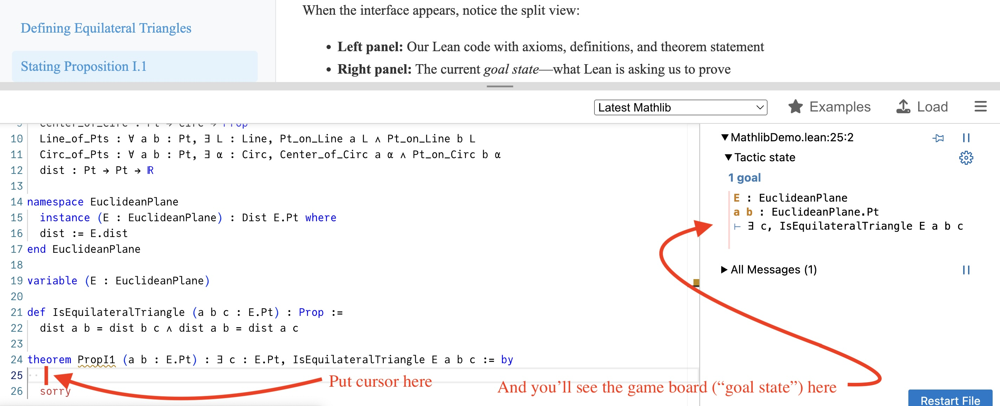

Lecture 4: Continuing to Set Up Formal Euclidean Geometry
Formal Euclidean Geometry, Prof. Kontorovich
Rutgers Math Corps, Summer 2025
Review: Where We Left Off in Lecture 3
In our previous lecture, we began the journey toward complete mathematical rigor by setting up a formal axiomatic structure for Euclidean geometry. Let's recall where we left off:
Pt : Type
Line : Type
Circ : Type
Pt_on_Line : Pt → Line → Prop
Pt_on_Circ : Pt → Circ → Prop
Center_of_Circ : Pt → Circ → Prop
Line_of_Pts : ∀ a b : Pt, ∃ L : Line,
(Pt_on_Line a L) ∧ (Pt_on_Line b L)
Circ_of_Pts : ∀ a b : Pt, ∃ α : Circ,
(Center_of_Circ a α) ∧ (Pt_on_Circ b α)
Next let's try to state Proposition I.1, the construction of an equilateral triangle, given two points. First we need to define an equilateral triangle. That means we have three points that are equidistant. But we don't yet have a notion of distance! So let's add this to our axioms:
Defining Equilateral Triangles
Now let's define what we mean by an "equilateral triangle." In our formal system, we can't rely on visual intuition or informal descriptions.
For an equilateral triangle, we want to say that three points form an equilateral triangle if all three sides have equal length. However, due to transitivity of equality (that is, A=B and B=C implies A=C), it's sufficient to check that two pairs of sides are equal. Here's how to write that in Lean:
(dist a b = dist b c) ∧ (dist a b = dist a c)
Let's break this down:
- a b c : Pt — We take three points as input
- : Prop — The colon means "and now comes the output type". This definition returns a proposition (True or False -- the three points form an equilateral triangle, or not)
- := — What proposition does it return? Here's how you actually define it:
- dist a b = dist b c — The distance from a to b equals the distance from b to c
- ∧ — This fancy symbol is mathematicians' shorthand for "and"
- dist a b = dist a c — The distance from a to b equals the distance from a to c
Since equality is transitive, these two conditions will also imply that dist b c = dist a c, so all three sides are equal.
In general, the formal syntax for a definition is:
Stating Proposition I.1 Formally
Now we can give the formal statement of Euclid's first proposition. Again, the formal syntax is similar to defintions:
Proof
Euclid's Proposition I.1 states: "To construct an equilateral triangle on a given finite straight line." In modern terms, this means: given any two points, we can find a third point such that the three points form an equilateral triangle. Here it is:
Again let's parse this carefully:
- theorem PropI1 — We're stating a theorem called PropI1 (that is, Proposition I.1)
- (a b : Pt) — Given any two points a and b
- : — Here comes the output:
- ∃ (c : Pt) — There exists a point c...
- IsEquilateralTriangle a b c — ...such that a, b, and c form an equilateral triangle
- := by — The proof begins here
This is a beautiful translation of Euclid's geometric language into pure logic!
The Chess Analogy: Why It's Useful to Look at a Chess Board
Before we dive into the proof, let me explain why using a computer program like Lean is so valuable for formal mathematics. Think about chess...
I can describe the first few moves in a chess game perfectly using algebraic notation: 1. e4 e5, 2. Nf3 Nf6. This notation is completely precise and unambiguous—any chess player can reconstruct the exact game from these symbols.
But isn't it much easier and more intuitive to just see the board?
When you can visualize the current position, you immediately understand:
- What pieces are where
- What moves are currently legal
- What threats and opportunities exist
- What the overall strategic situation looks like
Formal Proofs vs. Proof Assistants
Traditional (natural language) proofs are like chess games written in algebraic notation—completely precise but hard to follow and easy to make mistakes in.
Proof assistants like Lean are like having a chess board that shows you the current position after each move, making it much easier to see what's happening and plan your next step!
In formal mathematics, we still need to provide every logical step (just like chess notation), but Lean acts as our "mathematical chess board"—it shows us the current "goal state" (game board) and helps us see exactly what we need to prove next.
Interactive Lean Demo: Seeing the Goal State
Let's see what happens when we input our axioms, definition, and theorem statement into Lean. Click the button below to see the Lean interface:
When the interface appears, notice the split view:

- Left panel: Our Lean code with axioms, definitions, and theorem statement
- Right panel: The current goal state—what Lean is asking us to prove
This goal state is like our chess board—it shows us exactly where we are in the proof and what we need to do next!
How Should We Continue?
Here's what the goal state looks like at the start of the proof
⊢ ∃ (c : Pt), IsEquilateralTriangle a b c
The symbol "⊢" is a "turnstile", meaning "here's the Goal". Lean is just restating to us that it understands the problem we're trying to solve. It's saying: you shall not pass the turnstile until you give me the point c and a proof that a, b, and c form an equilateral triangle. It's like a mathematical escape room!
So, how can we get out?
Think About It
How would you approach this proof? What was Euclid's construction strategy?
Hint: Remember the construction from Lecture 3—we need to create two circles and find their intersection point.
But here's the key question: Do we have enough axioms yet to complete this proof?
Looking at our current axiom system, we can:
- Create a line through any two points (Postulate 1)
- Create a circle with any center and passing through any point (Postulate 3)
- Measure distances between points
But Euclid's construction requires us to find the intersection of two circles. Do our axioms guarantee that two circles will intersect?
Problem
(Just in natural language:) Not every pair of circles actually intersect. What are good, easily statable general conditions describing exactly when a pair of circles do indeed intersect?
This is exactly the gap we identified in Lecture 3! We'll need to add more axioms to handle circle intersections before we can complete the proof.
Coming Up in Future Lectures
In our next lectures, we'll:
- Add axioms for circle intersection
- Complete the formal proof of Proposition I.1
- Explore how this approach eliminates the hidden assumptions that plagued Euclid's original proof
class EuclideanPlane where
Pt : Type
Line : Type
Circ : Type
Pt_on_Line : Pt → Line → Prop
Pt_on_Circ : Pt → Circ → Prop
Center_of_Circ : Pt → Circ → Prop
Line_of_Pts : ∀ a b : Pt, ∃ L : Line,
(Pt_on_Line a L) ∧ (Pt_on_Line b L)
Circ_of_Pts : ∀ a b : Pt, ∃ α : Circ,
(Center_of_Circ a α) ∧ (Pt_on_Circ b α)
dist : Pt → Pt → ℝ
variable [EuclideanPlane]
def IsEquilateralTriangle (a b c : Pt) : Prop :=
(dist a b = dist b c) ∧ (dist a b = dist a c)
theorem PropI1 (a b : Pt) : ∃ (c : Pt), IsEquilateralTriangle a b c := by
sorry
⊢ ∃ (c : Pt), IsEquilateralTriangle a b c
-- triangle abc is equilateral
-- What construction should we use?